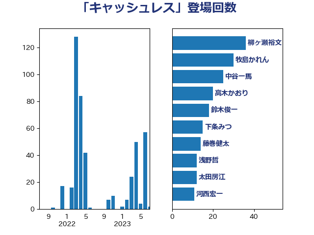

単語「キャッシュレス」

| 柳ヶ瀬裕文 | 日本維新の会 | 36 回 |
| 牧島かれん | 自由民主党 | 30 回 |
| 中谷一馬 | 立憲民主党 | 25 回 |
| 高木かおり | 日本維新の会 | 20 回 |
| 鈴木俊一 | 自由民主党 | 18 回 |
| 下条みつ | 立憲民主党 | 15 回 |
| 藤巻健太 | 日本維新の会 | 14 回 |
| 浅野哲 | 国民民主党 | 12 回 |
| 太田房江 | 自由民主党 | 12 回 |
| 河西宏一 | 公明党 | 11 回 |
| 堤かなめ | 立憲民主党 | 10 回 |
| 矢倉克夫 | 公明党 | 9 回 |
| 岸真紀子 | 立憲民主党 | 9 回 |
| 平沼正二郎 | 自由民主党 | 8 回 |
| 岸田文雄 | 自由民主党 | 8 回 |
| 山田太郎 | 自由民主党 | 8 回 |
| 小林史明 | 自由民主党 | 8 回 |
| 阿部司 | 日本維新の会 | 7 回 |
| 河野太郎 | 自由民主党 | 7 回 |
| 岬麻紀 | 日本維新の会 | 6 回 |
| 山口那津男 | 公明党 | 6 回 |
| 金子恭之 | 自由民主党 | 5 回 |
| 細田健一 | 自由民主党 | 4 回 |
| 田島麻衣子 | 立憲民主党 | 4 回 |
| 渡辺周 | 立憲民主党 | 4 回 |
| 松本剛明 | 自由民主党 | 4 回 |
| 岩田和親 | 自由民主党 | 4 回 |
| 遠藤良太 | 日本維新の会 | 3 回 |
| 緒方林太郎 | 無所属 | 3 回 |
| 斉藤鉄夫 | 公明党 | 3 回 |
| 音喜多駿 | 日本維新の会 | 2 回 |
| 阿部弘樹 | 日本維新の会 | 2 回 |
| 鈴木義弘 | 国民民主党 | 2 回 |
| 田村貴昭 | 日本共産党 | 2 回 |
| 沢田良 | 日本維新の会 | 2 回 |
| 山本左近 | 自由民主党 | 2 回 |
| 宮崎政久 | 自由民主党 | 2 回 |
| 塩川鉄也 | 日本共産党 | 2 回 |
| 古川俊治 | 自由民主党 | 2 回 |
| 伊藤渉 | 公明党 | 2 回 |
| 高木宏壽 | 自由民主党 | 1 回 |
| 西岡秀子 | 国民民主党 | 1 回 |
| 蓮舫 | 立憲民主党 | 1 回 |
| 若宮健嗣 | 自由民主党 | 1 回 |
| 芳賀道也 | 国民民主党 | 1 回 |
| 緑川貴士 | 立憲民主党 | 1 回 |
| 竹内譲 | 公明党 | 1 回 |
| 石井啓一 | 公明党 | 1 回 |
| 田村まみ | 国民民主党 | 1 回 |
| 玉木雄一郎 | 国民民主党 | 1 回 |
| 浅田均 | 日本維新の会 | 1 回 |
| 斎藤アレックス | 国民民主党 | 1 回 |
| 山本博司 | 公明党 | 1 回 |
| 小林鷹之 | 自由民主党 | 1 回 |
| 宮路拓馬 | 自由民主党 | 1 回 |
| 宮崎勝 | 公明党 | 1 回 |
| 宮下一郎 | 自由民主党 | 1 回 |
| 大塚耕平 | 国民民主党 | 1 回 |
| 城井崇 | 立憲民主党 | 1 回 |
| 中川康洋 | 公明党 | 1 回 |